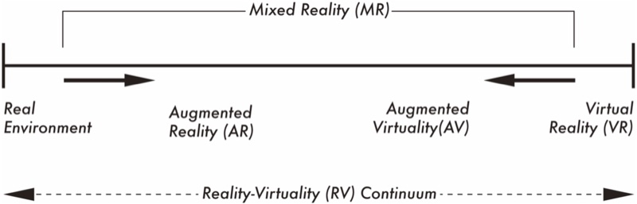

A bibliometric analysis of immersive technology in museum exhibitions: exploring user experience
Frontiers in Virtual Reality, 2023

Abstract
Introduction. This study aims to comprehensively understand the existing literature on immersive technology in museum exhibitions, focusing on virtual reality (VR), augmented reality (AR), and the visitor experience. The research utilizes a bibliometric approach by examining a dataset of 722 articles.
Methods. The study employs co-citation and co-word analysis to investigate trends and forecast emerging areas, particularly the role of VR in the museum context.
Results. The analysis reveals five interconnected thematic clusters: (1) VR and AR-enhanced heritage tourism, (2) VR and AR-enabled virtual museums, (3) interactive digital art education in immersive environments, (4) immersive storytelling in virtual heritage spaces, and (5) mobile AR heritage revival.
Discussion. The article highlights influential works and shows the field's emphasis on game-driven experiences and interactive 3D heritage, with VR adoption holding the potential to revolutionize user experiences within the cultural heritage sector.